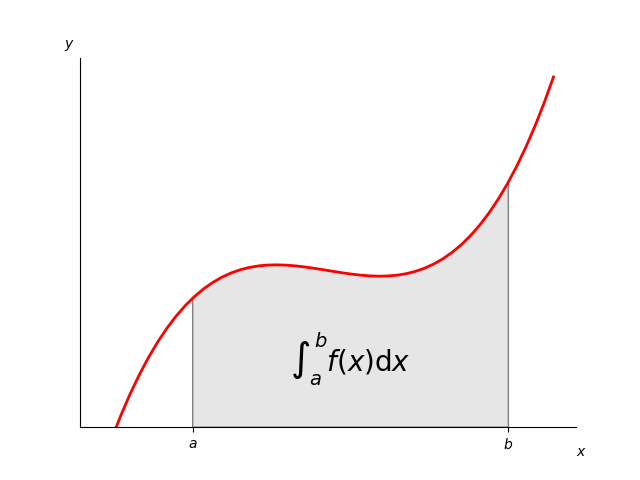

Version 3.1.1
Note
Click here to download the full example code
Although this is a simple example, it demonstrates some important tweaks:

- A simple line plot with custom color and line width.
- A shaded region created using a Polygon patch.
- A text label with mathtext rendering.
- figtext calls to label the x- and y-axes.
- Use of axis spines to hide the top and right spines.
- Custom tick placement and labels.
import numpy as np
import matplotlib.pyplot as plt
from matplotlib.patches import Polygon
def func(x):
return (x - 3) * (x - 5) * (x - 7) + 85
a, b = 2, 9 # integral limits
x = np.linspace(0, 10)
y = func(x)
fig, ax = plt.subplots()
ax.plot(x, y, 'r', linewidth=2)
ax.set_ylim(bottom=0)
# Make the shaded region
ix = np.linspace(a, b)
iy = func(ix)
verts = [(a, 0), *zip(ix, iy), (b, 0)]
poly = Polygon(verts, facecolor='0.9', edgecolor='0.5')
ax.add_patch(poly)
ax.text(0.5 * (a + b), 30, r"$\int_a^b f(x)\mathrm{d}x$",
horizontalalignment='center', fontsize=20)
fig.text(0.9, 0.05, '$x$')
fig.text(0.1, 0.9, '$y$')
ax.spines['right'].set_visible(False)
ax.spines['top'].set_visible(False)
ax.xaxis.set_ticks_position('bottom')
ax.set_xticks((a, b))
ax.set_xticklabels(('$a$', '$b$'))
ax.set_yticks([])
plt.show()
Keywords: matplotlib code example, codex, python plot, pyplot Gallery generated by Sphinx-Gallery